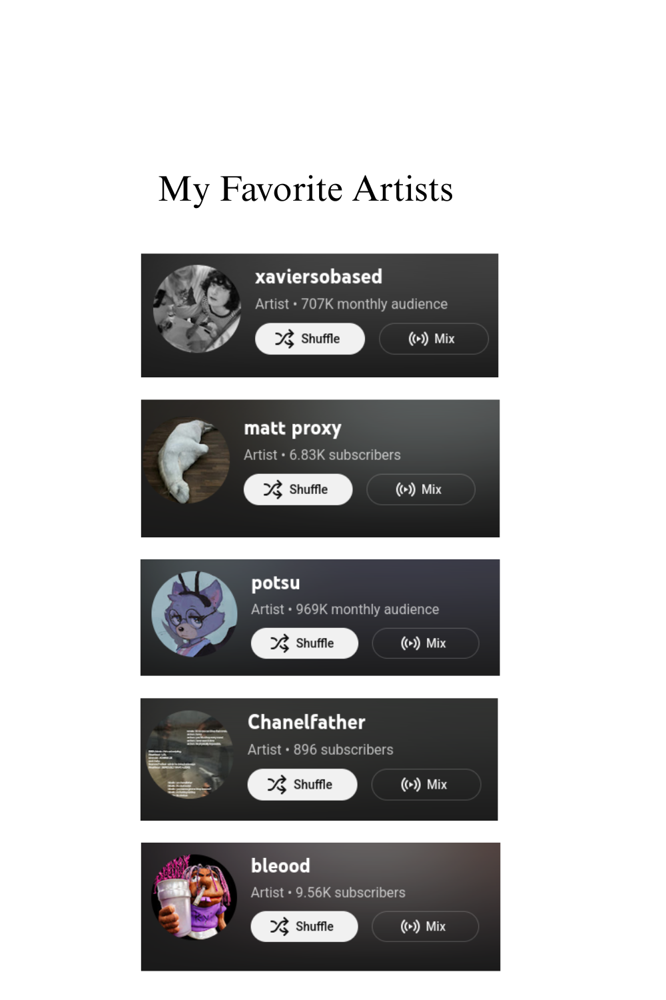

Personal archive / 01
Prayash
Thapa
Applied Mathematics
RIT Freshman
About me
Hey Im Prayash Thapa A current undergrand at the Rochester Institute of Technology studying mathematics, I made this website to share some cool things about myself, I hope you like what you see here and if you do shoot me a email at prayashthapa2007@gmail.com
Sound archive
My Favorite Artists
